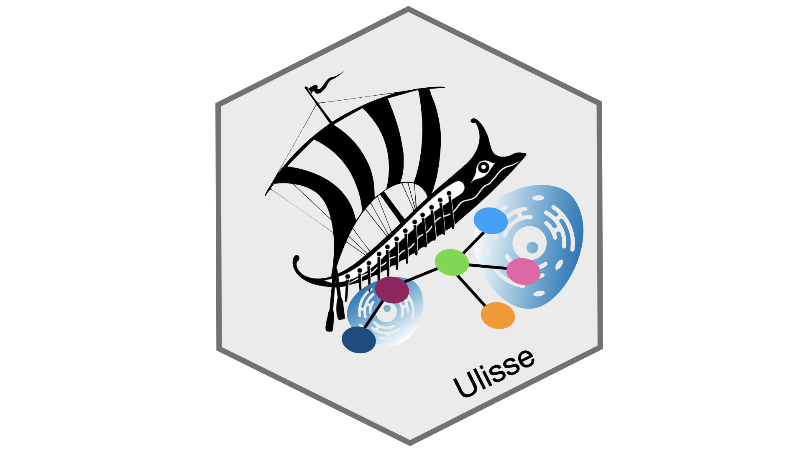

Omics assay results in long gene lists whose biological interpretation is a major challenge. Pathway enrichment analysis is used to test whether a pathway is richer in genes of a gene list than what is expected by chance. However, there are no clear boundaries between pathways, such that gene products interact within and between pathways, in a phenomenon called cross-talks. Cross-talks between pathways are relevant to dissect regulatory mechanisms, identify effective drug combinations and investigate complex disease phenotypes. As molecular interactions go beyond cell boundaries, cross-talks (or communication) between different cell-types can be studied thanks to single-cell RNA sequencing technologies.
Ulisse provide the tools to perform:
- Gene-set enrichment analysis:
- ORA (Over Representation Analysis)
- GSEA (Gene set enrichment analysis)
- Enrichment map to help interpretation of ORA or GSEA results
- Cross-talk analysis:
- Gene-set cross-talk
- Gene-set connected components
- Gene-Set Topological-Module cross-talk
- Functional relevance analysis to reconstruct gene role in Gene-set cross-talk analysis in terms of number of interactor genes and processes/cell types involved
Typical application of Ulisse include:
- Pathway enrichment analysis of omics data obtained from bulk or single-cell samples
- Pathway cross-talk analysis of omics data obtained from bulk or single-cell samples
- Communication analysis between clusters or cell-type in single-cell samples
Source code: https://github.com/emosca-cnr/Ulisse
Installation
Ulisse requires R >= 4.0.0, and some Bioconductor packages.
To successfully install Ulisse firstly run
{r, include=TRUE, eval=FALSE} if (!require("BiocManager", quietly = TRUE)){ install.packages("BiocManager") } BiocManager::install(c("DOSE", "qvalue", "TCGAbiolinks", "ComplexHeatmap", "pander", "kableExtra"))
The other dependencies, if missing, should be automatically installed using the following command:
{r, include=TRUE, eval=FALSE} devtools::install_github("emosca-cnr/Ulisse", build_vignettes = TRUE)
Contacts:
- Ettore Mosca, Bioinformatics Lab, CNR-ITB